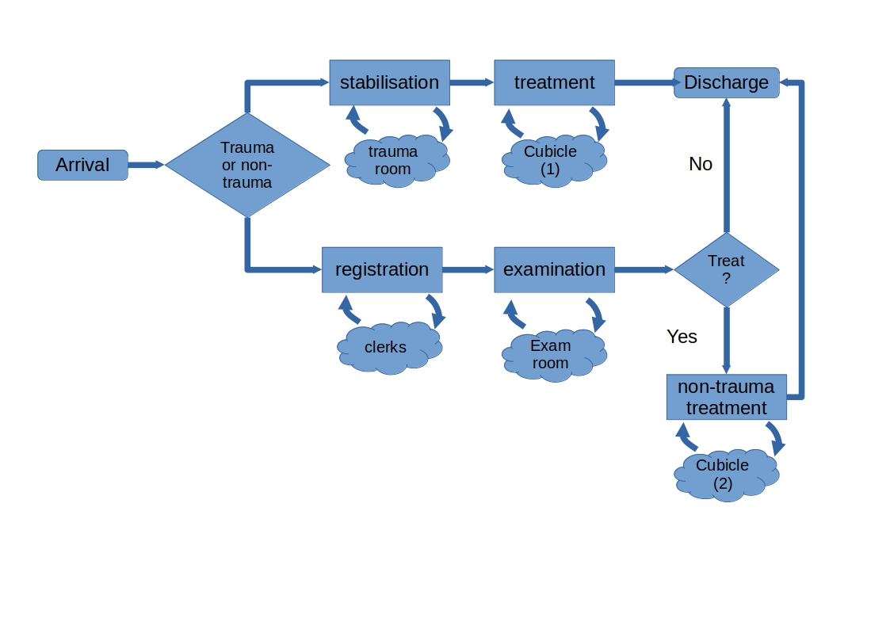

2. Model logic
Contents
2. Model logic¶
2.1 Base model overview diagram¶

2.2 Base model logic¶
This example is based on exercise 13 from Nelson (2013) page 170.
Nelson. B.L. (2013). Foundations and methods of stochastic simulation. Springer.
Patients arrive to the health clinic between 6am and 12am following a non-stationary poisson process. After 12am arriving patients are diverted elsewhere and remaining WIP is completed. On arrival, all patients quickly sign-in and are triaged.
The health clinic expects two types of patient arrivals:
Trauma arrivals:
patients with severe illness and trauma that must first be stablised in a trauma room.
these patients then undergo treatment in a cubicle before being discharged.
Non-trauma arrivals
patients with minor illness and no trauma go through registration and examination activities
a proportion of non-trauma patients require treatment in a cubicle before being dicharged.
In this model treatment of trauma and non-trauma patients is modelled seperately.
2.3 Scenario logic¶
Experimentation in this model is simple and varies the number of resources available.
2.4 Algorithms¶
Arrivals to the model are modelled as a non-stationary poission process. The Thinning algorithm is employed.
Thinning is a acceptance-rejection sampling method and is used to generate inter-arrival times from a NSPP.
A NSPP has arrival rate \(\lambda(t)\) where \(0 \leq t \leq T\)
The thinning algorithm (adapted from Banks et al.)
A NSPP has arrival rate \(\lambda(t)\) where \(0 \leq t \leq T\)
Here \(i\) is the arrival number and \(\mathcal{T_i}\) is its arrival time.
Let \(\lambda^* = \max_{0 \leq t \leq T}\lambda(t)\) be the maximum of the arrival rate function and set \(t = 0\) and \(i=1\)
Generate \(e\) from the exponential distribution with rate \(\lambda^*\) and let \(t = t + e\) (this is the time of the next entity will arrive)
Generate \(u\) from the \(U(0,1)\) distribution. If \(u \leq \dfrac{\lambda(t)}{\lambda^*}\) then \(\mathcal{T_i} =t\) and \(i = i + 1\)
Go to Step 2.
2.4 Components¶
Entities¶
There is a single type of entity patient that has a class of either trauma or non-trauma
Activites¶
Patient triage: routing out is probabilistic.
Registration: non-trauma only. Routing out is deterministic and singular.
Patient Examination: non-trauma only. Routing out is probabilistic.
Non-trauma patient treatment. Followed by discharge.
Trauma patient stabilisation
Trauma patient treatment. Followed by discharge.
Resources (base number)¶
Triage bays (1)
Registration clerks (1)
examination rooms (3)
non-trauma treatment cubicles (1)
Trauma stabilisation rooms (2)
Trauma treatment cubicles (1)
Queues¶
Each of the activities listed above has an associate queue. In the model all queues are FIFO.
Entry/exit points¶
The model has a single entry and exit point. As noted above thinning is used to model arrivals and patients are assigned as trauma or non-trauma via sampling on arrival.